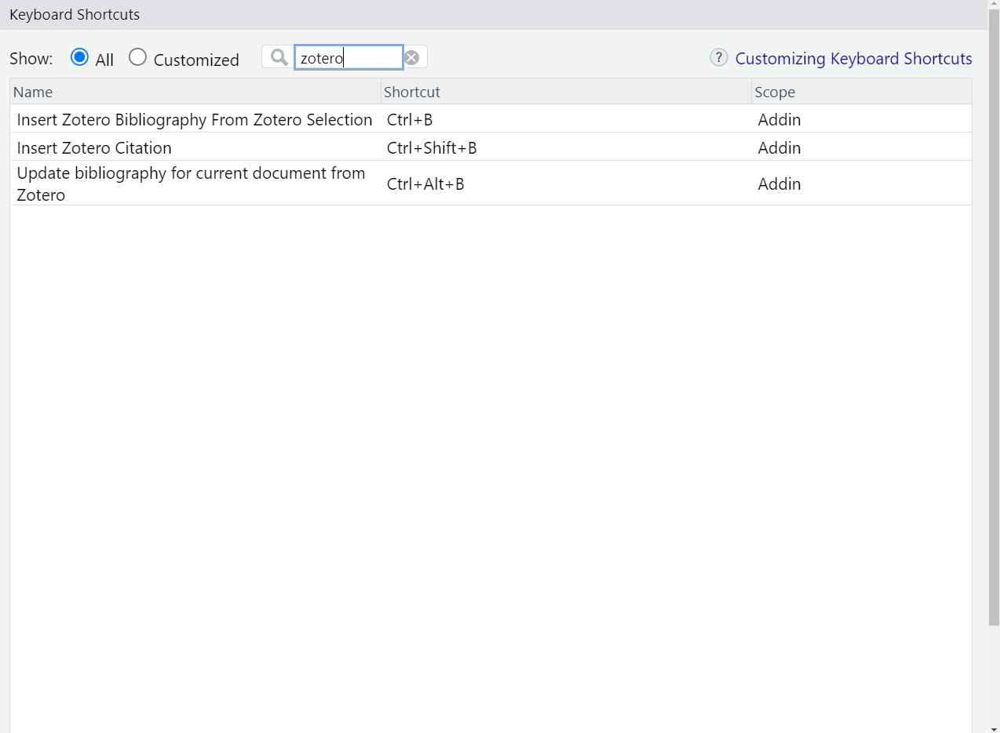

9 Tutorial: Introduction to R Markdown
R Markdown is a powerful tool for scientists that allows you to intermingle code and text in a single document. It’s a versatile R package that combines the core syntax of markdown (an easy-to-write plain text format) with embedded R code chunks, enabling the creation of dynamic documents, presentations, dashboards, and even entire books (R Markdown supports a variety of output formats, including HTML, PDF, Microsoft Word and MANY more!).
Developed by Yihui Xie in 2012, and actively maintained by the RStudio team, R Markdown was designed to provide a seamless workflow for both data analysis and reporting. One of the key features of R Markdown is its ability to execute R code chunks in the document and automatically capture the output and include it in the final document. This can include results of computations, tables, and even graphics generated by the R code. R Markdown documents are completely reproducible and can be automatically regenerated whenever the underlying data or analysis code changes.
Creating an R Markdown document is an interactive process that combines elements of coding, data analysis, and scientific writing. Let’s get started.
9.0.1 Packages
Firstly, you’ll need to install the rmarkdown package and its
dependencies, including knitr for executing code chunks. You can do
this from within R or RStudio:
9.0.2 Creating a new R Markdown file
You can create a new R Markdown file in RStudio by clicking on
File > New File > R Markdown... This will open a dialog box where you
can give the document a title and author, and choose the output format
(HTML, PDF, or Word).
9.0.3 Structure of R Markdown documents
An R Markdown document consists of YAML metadata, markdown text, and R code chunks.
YAML Metadata: This is the section at the top of the document, enclosed in —. It contains information like the title, author, date, and output format of the document.
Markdown Text: Markdown is a simple formatting syntax that allows you to include things like headers, links, italics, bullet lists, images, etc., in plain text.
R Code Chunks: You can insert R code into your document by enclosing it in
{r} and.
This code chunk would be executed when the document is rendered, and the description of the WoJ dataset would be included in the final document.
9.0.4 Rendering the document
To convert your R Markdown document into a final, shareable format, you
need to ‘render’ it. You can do this in RStudio by clicking the ‘Knit’
button. You can also use the render() function from the rmarkdown
package:
This will execute all of the R code chunks, convert the markdown text to formatted text, and combine everything into a final document.
9.0.5 Formatting the document
You can format your R Markdown document by using Markdown as a simple formatting syntax. This is the basic syntax:
Headers: Use # for a top-level header (H1), ## for H2, up to ###### for H6. The more #s, the smaller the header.
Emphasis: For italic text, wrap words in * or _ , like * italic * or _ italic _ . For bold, use double ** or __ , like ** bold ** or __ bold __.
Lists: Use *, -, or + followed by a space for bullet points. For numbered items, start the line with the number, a period, and a space.
Links: Wrap the clickable text in square brackets [] and the URL in parentheses (), like this but without the space: [Lara Kobike] (homepage_url).
Images: Similar to links, but prefix the square bracket with an exclamation point !, like this but without the space: [Alt text] (image_url).
Code: Use backticks ` around inline code snippets. For larger blocks of code, use triple backticks.
Blockquotes: Start the line with a > to create a blockquote.
Footnotes: The footnote number is placed inside the square bracket after a caret:
^[ 4 ]. Then you put the text of the footnote after another caret:^[ 4 ]: This is how a footnote looks like after rednering.4
Finally, you can use this R Markdown cheat sheet to quickly learn more.
Advanced tip: The bookdown package extends the functionality of
the rmarkdown package. It can be used to create long and more
complicated documents. Here is an introduction to bookdown by Benjamin
Fretwurst, which he created for his students in Zurich (including
videos):
Link.”
9.0.6 Citing papers with Zotero
You can integrate Zotero to cite your sources within an R Markdown document. First, you need to download and install Zotero. It’s a free, open-source tool that helps you collect, organize, cite, and share your research sources. After you have Zotero installed, you also need to install an extension called Better BibTeX for Zotero, which simplifies the process of exporting your Zotero libraries in a format that is easy to use with R Markdown.
To install Better BibTeX, open Zotero and follow this path:
Tools > Add-Ons > Gear Icon > Install Add-On From File…. Then go to
the folder you downloaded the Better Bibtex file to. Select the
BetterBibtex.xpi file, click “Install Now” in the Zotero pop-up, and
follow the system setup.
Pro tip: Better BibTeX will create dynamic citation keys from the
Zotero paper information, and this key may change when you edit the
paper in Zotero. You can generate a pinned (i.e., fixed) citation key by
selecting one or more items, right-clicking, and selecting
Pin BibTeX key, which will add the current citation key to the “extra”
field, thereby pinning it. If you want to update your citation key
default style, go to
Tools > Better BibTex > Open Better BibTex Preferences and enter your
desired citation key style, e.g. “auth.fold.lower + year”. See this
screenshot for a visual aid:
| How to pin BibTex keys in Zotero: |
 |
Next, you need to connect Zotero with R Markdown. The easiest way that
I’ve found is through using the rbbt package (see the author’s blog
here).
However, it’s not hosted on CRAN, so be careful. This package might
not run stable in the future.
After installing rbbt and restarting RStudio, go to
Tools > Modify Keyboard Shortcuts. Search for zotero and click on
the ‘Shortcut’ field for the ‘Insert Zotero Bibliography from Zotero
Selection’ line and type in your desired shortcut keys, e.g.
CNTRL + B. See this screenshot for a visual aid:
| How to modify your Zotero BibTex Shortcuts in RStudio: |
|  |
Alright, now it’s time to open a new R script. Go to
File > New File > R Script and open an empty document. Save this
document via File > Save As and call it “references.bib”. You will see
a warning that this is changing the R script to be a bib file. This
warning is great news because that’s exactly what we want. Make sure
that your references.bib is placed in the same directory as your R
Markdown .Rmd file.
Next, switch to Zotero and select all references that you want to cite.
For example, use the shortcut CNTRL + A in your Zotero project to
select all papers in that project at the same time. Move back to R
Markdown and into your “references.bib” file. Go in there and hit your
‘Insert Zotero Bibliography from Zotero Selection’ shortcut (i.e.
CNTRL + B). Voilá, you got yourself a bibliography to cite from that
you can always easily update using CNTRL + B. Save that updated .bib
file.
Now, whenever you are in your R Markdown file, you can just type an “@”
symbol and RStudio will automatically prompt you with the options from
your .bib file. Choose your reference and hit Enter. This will insert
the citation key in your R Markdown document, e.g. @smith2023. In the
actual output, @smith2023 will be replaced by a properly formatted
citation, and a reference list will be automatically generated at the
end of your document.
For more details on how to use Zotero with R Markdown, including how to specify citation style and how to cite page numbers, see the official guide on using Zotero with R Markdown.
This is how a footnote looks like after rendering.]↩︎